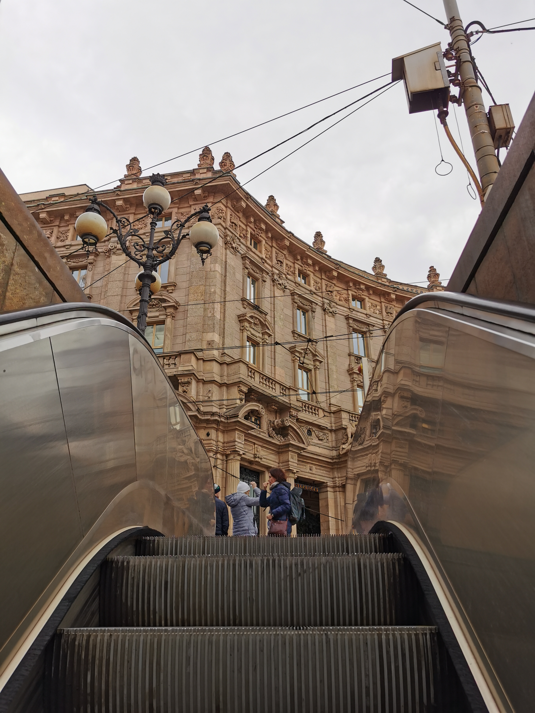

I like teamwork and I try to keep myself always busy and I'm more of a night owl than an early bird.. I like diy projects like painting and sewing. I like learning by seeing and doing, not a big fan of long theoretical courses.
Since 2012 until 2019 I volunteered at different organizations such as Muzeul de Panze si Povesti from Mandra, where at fisrt I was a participant and after 1 or 2 years I became a volunteer and a volunteer coordinator. I was responsible with organizing sewing workshops, painting, games and assigning tasks and volunteer accountability.
I also volunteered at some festivals as Murmur, Airfield and Untold.
In my free time, I like reading and watching TV shows, my favourite one at the moment being 9-1-1, but I also like to watch anime from now and then.
I also love traveling, my soul country being Italy, but I daydream about visiting Japan and Korea some time.
